Python 2.7.12 |Anaconda 4.2.0 (64-bit)| (default, Jun 29 2016, 11:07:13) [MSC v.1500 64 bit (AMD64)]
Type "copyright", "credits" or "license" for more information.
IPython 5.1.0 -- An enhanced Interactive Python.
? -> Introduction and overview of IPython's features.
%quickref -> Quick reference.
help -> Python's own help system.
object? -> Details about 'object', use 'object??' for extra details.
In [1]: runfile('C:/Users/xeroj/Downloads/V/Computer Vision/Lab4_Clustering__Classification/lab4_problem2.py', wdir='C:/Users/xeroj/Downloads/V/Computer Vision/Lab4_Clustering__Classification')
-----========== Dataset Loading
Dataset: CIFAR10 , Feature: PIXEL Algorithm: KMEANS
Loading 5 CIFAR-10 batches
Took 2.987 s to load and split CIFAR10
Training: 37500 ,Testing: 12500
-----========== Computing Features: PIXEL
Took 0.000 s to compute features
-----========== Clustering Training: KMEANS
Performing KMEANS training for 37500 images.
KMEANS took 326.987 s for k = 10
-----========== KMEANS Training Accuracy Evaluation
Checking the accuracy of KMEANS using 37500 images
KMEANS Training Accuracy: 22.048 %
KMEANS took 2.004 s for k = 10
-----========== KMEANS Testing
Performing K-Means testing for 12500 images.
KMEANS took 0.547 s for k = 10
-----========== KMEANS Testing Accuracy Evaluation
Checking the accuracy of KMEANS using 12500 images
KMEANS Testing Accuracy: 22.208 %
KMEANS took 0.549 s for k = 10
Program ran for 333.079 s
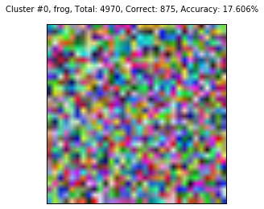
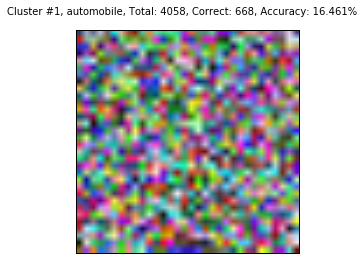
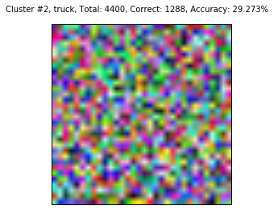
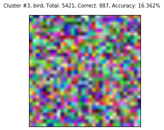
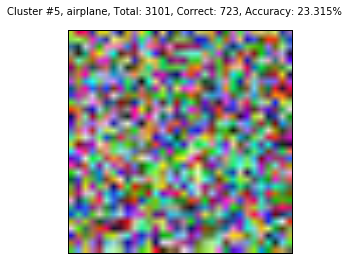
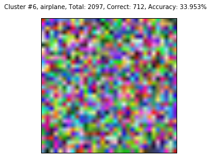
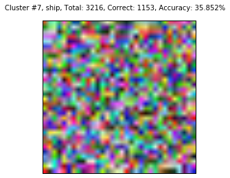
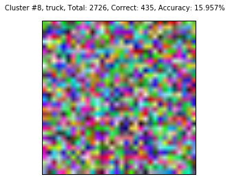
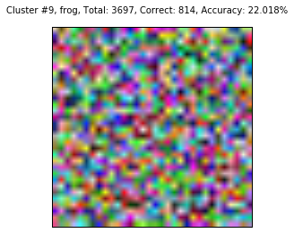
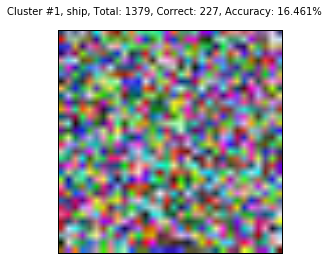
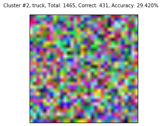
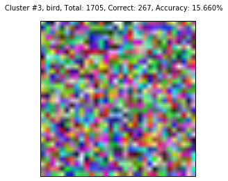
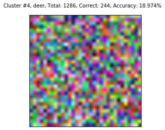
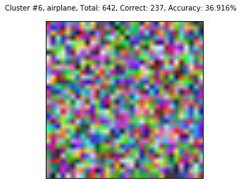
In [2]: